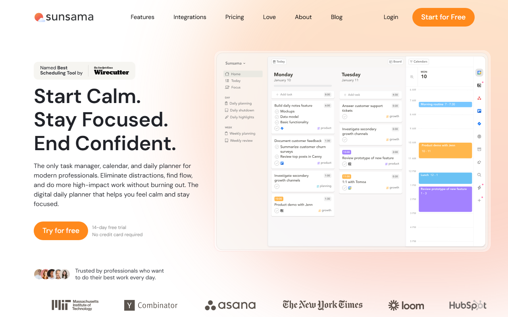
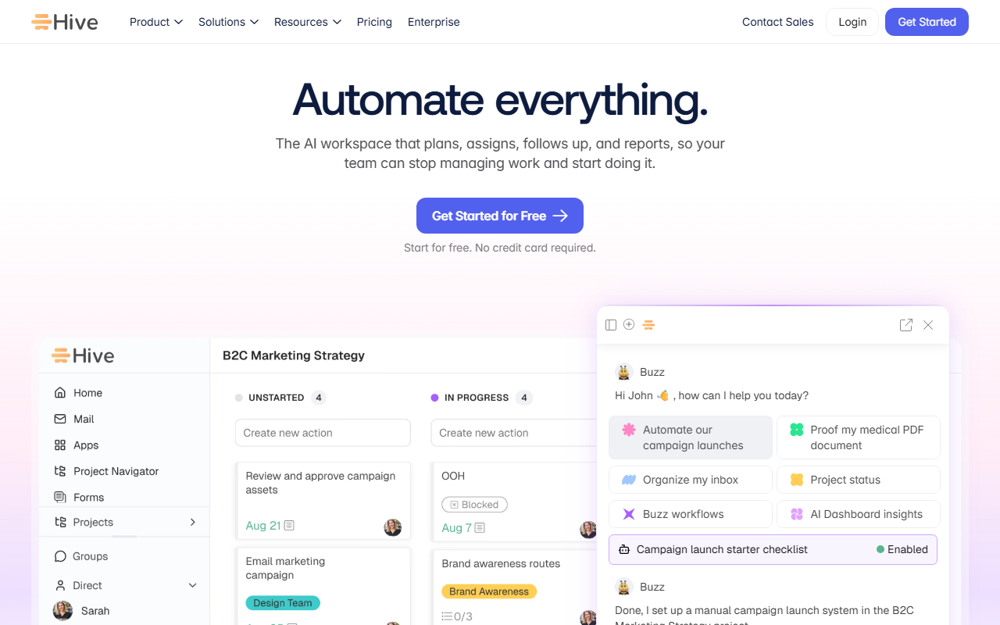

タスク管理アプリおすすめ｜個人向け2選＋共同作業向け6選を比較
タスク管理アプリは、仕事や私用のタスクを記録し、期限や優先順位を管理するツールです。個人のToDo管理に向く製品と、チームで担当や進み具合を共有する製品があります。
紹介するのは、個人向け2製品と共同作業向け6製品。料金や無料枠のほか、日本語対応と向いている人も比べます。
タスク管理アプリおすすめ8選の早見
- Todoist：無料／個人プロジェクト5件
- Sunsama：月$22／14日間試用
- monday.com・ClickUp：無料枠あり
- Wrike・Hive：無料枠あり
- SmartSuite：月$15〜／14日間試用
- Backlog：無料／日本語対応
迷ったらTodoistがおすすめです。個人プロジェクト5件まで無料で、日本語UIと日本語ヘルプもそろうのが特徴。
無料のBeginnerで使える範囲と、日本語版の画面を確認できます。
タスク管理アプリの選び方｜入力負荷・時間配分・共同作業で絞る
最初に見るのは、共有相手の有無。次は毎日無理なく入力できるかどうか。その後、無料枠と対応端末を調べ、日本語で使えるかも見ましょう。 普段使わない機能は比較から外してかまいません。

1人で使うか、共同作業があるかを先に決める
自分の締切に加え、請求や執筆の予定をまとめるだけなら、個人向けのToDo型から始められます。担当者や進み具合に加え、資料の保管場所も共有するなら、プロジェクト管理型が必要です。
毎日入力できる手数かを確認する
候補ごとに同じ10件ほどの仕事を登録します。試すのは、期限の設定・変更と、今日の一覧へ移す操作。思いついた仕事をすぐ記録できるかを見ます。未完了の仕事を見失わないかも確かめておきます。
タスク一覧だけか、カレンダー上の時間配分まで必要かを決める
「何をするか」が分かれば動ける人には、Todoistのような一覧型が合います。取り組む時間まで決めたい人の候補はSunsama。毎日の計画に手間をかけたくないなら、時間配分型は機能を持て余すかもしれません。
無料枠・日本語・利用端末を契約前に確認する
無料プランと期間限定トライアルは別物。日本語UIと日本語サポートも分けて見ます。
候補を絞った後に見るのは、各社が案内する対応端末。同じアカウントかワークスペースでタスクを1件更新し、普段使う端末にも反映されるか試してください。
個人・フリーランス向けの主軸2選
無料枠から整理するならTodoist、有料前提で1日の計画まで組むならSunsamaです。 役割が異なるため、料金だけで優劣は決まりません。
Todoist｜素早く記録して日本語で整理したい人向け

公式サイトは日本語表示で、無料で始めるボタンとタスク画面が載っています。
Beginnerは個人プロジェクト5件まで使え、Proには7日間のトライアルがあります。画面とヘルプは日本語に対応。JPY決済とJCBも利用可能です。
Proは月払い$7、または894円。年払いは$60、または8,064円です。Businessは月払い$10、または1,280円／ユーザー。年払いは$96、または11,520円／ユーザーです。
Beginnerの機能と有料プランの料金を日本語で見比べられます。
Sunsama｜カレンダー上で1日の時間配分まで決めたい人向け

英語の公式画面には、日別のタスクと予定を並べたカレンダーが表示されています。
Sunsamaは1プラン制です。月払いは$22（約3,498円）／ユーザーで、年払いは月$17相当（約2,703円、年$204＝約32,436円）。14日間トライアルはカード登録不要です。支払いには銀行発行カードを使い、請求書は請求ポータルに表示されます。
解約は設定内のBillingから。解約後も、現在の請求期間末までは利用可能です。公式情報では、日本語UIと日本語サポートの対応状況は不明。必要な人は試用中に画面を見て、問い合わせ窓口にも尋ねてください。
14日間トライアルの案内と、カレンダー中心の画面構成を見られます。
共同作業が必要になったときのタスク管理ツール6選
担当者ごとの進み具合を共有し、資料の閲覧権限も分けたい人向けの6候補です。 個人向けの2製品とは別に、利用人数や最低契約数で比べます。
monday.com｜2人までの無料枠から共同作業を試したい

日本語の公式画面に、カード不要で2週間試せる案内が表示されています。
Freeは最大2席で、3ボードと3 Docs、200を超えるテンプレートを利用できます。画面と公式ヘルプは日本語に対応。有料プランは最低3席からで、その後は5席単位の「席数バケット制」。公式料金ページにはJCBやPayPalが載っていますが、利用できる決済手段は地域によって異なります。
日本語版の製品概要と無料トライアルの入口を見られます。
ClickUp｜無料枠でタスクとメンバー数を広く試したい

英語の公式画面には、無料開始の案内とリスト・ボード・ガントの切り替えが映っています。
Free Foreverでは、タスク数とメンバー数が無制限。一方、ストレージは60MB、Spacesは5件です。日本語UIはベータ版として提供されています。有料のUnlimitedは、年払いの月額換算で$7（約1,113円）／ユーザー。年額は$84（約13,356円）、月払いは$10（約1,590円）／ユーザーです。添付ファイルが多いチームでは、人数より先に見るべきなのが60MBの上限。
無料版の入口と、タスクを表示する画面の種類を確認できます。
Wrike｜日本語の公式情報を見ながらチーム導入したい

日本語の公式画面には、無料で試すボタンと問い合わせ窓口が表示されています。
Wrikeには$0のFreeと、カード登録不要の14日間トライアルがあります。画面に加え、公式サイトとヘルプも日本語に対応。年払い表示は、Teamが$10（約1,590円）、Businessが$25（約3,975円）／ユーザー／月です。Teamの対象は2〜15ユーザーで、Businessは5〜200ユーザー。30人以下で契約する場合、席は5ユーザー単位で販売されます。
日本語の製品案内と無料トライアルへの導線を確認できます。
Hive｜10人までのチームで無料から始めたい

英語の公式画面には、カード不要の無料開始ボタンと進捗ボードが表示されています。
Freeのワークスペースメンバーは最大10人で、ストレージは200MB。AIクレジットは1,000で、タスクとノートに上限はありません。年払い表示は、Starterが$5（約795円）、Teamsが$12（約1,908円）／ユーザー／月。1ユーザーあたりの年額は、Starterが$60（約9,540円）、Teamsが$144（約22,896円）となります。公式の公開情報では、日本語UIと日本語での有人サポートの対応状況は不明。
無料で始める入口と、案件の進み具合を並べる画面を見られます。
SmartSuite｜タスク以外の業務情報もまとめたい

英語の公式画面には、無料トライアルとデモ予約のボタンが並んでいます。
SmartSuiteのUIは、日本語を含む15言語に切り替え可能。無料プランはありません。カード不要・自動課金なしで、14日間のProfessionalトライアルを使えます。Teamは年払い$15（約2,385円）／席／月。最低3ユーザーのため、最小年額は$540（約85,860円）です。Professionalは年払い$32（約5,088円）／席／月で、最低5ユーザーから。最小年額は$1,920（約305,280円）です。日本語での有人サポートは、公式情報だけでは不明。
14日間の試用開始と、製品デモの申し込み先が分かります。
Backlog｜日本語と日本円でチームの課題を管理したい

日本語の公式画面には、無料で試すボタンがあります。PC・スマホ版の製品画面も見られます。
現行Freeで使えるのは10ユーザー、1プロジェクトまで。日本語UI・日本語サポートがあり、料金は日本円建てです。Starterは月払い2,700円、年払い30,780円（月換算2,565円）で30ユーザーまで。Standard以上はユーザー数無制限となります。
2027年1月1日から料金体系とFreeの条件が変わる予定。同日以降に契約する場合は、新しいプラン条件で選び直してください。
無料トライアルの入口と、日本語で表示された製品画面を見られます。
請求画面から請求書と領収書を取得可能。現行Freeで試すなら、管理する仕事を1プロジェクトに絞ります。
無料で続けられるアプリと無料トライアルだけのツールを分ける
無料プランを継続できるのは6商材です。SunsamaとSmartSuiteは期間限定トライアルのみ。 無料で使える期間と、最初に達する上限を分けて見ます。
無料プランを継続できる6商材
- Todoist：個人プロジェクト5件
- monday.com：最大2席、3ボード、3 Docs
- ClickUp：タスク・メンバー無制限、ストレージ60MB、Spaces 5件
- Wrike：Freeは$0
- Hive：最大10メンバー、ストレージ200MB
- Backlog：現行Freeは10ユーザー、1プロジェクト
個人で使うなら、プロジェクト数を先に見ます。チームでは席数、添付ファイルが多い仕事では保存容量が目安です。
期間限定トライアルで判断する2商材
SunsamaとSmartSuiteのトライアルは14日間。どちらもカード登録は不要で、SmartSuiteは自動課金されません。継続するなら、Sunsamaは1ユーザー単位の料金、SmartSuiteは最低利用人数を試用中に見てください。
日本から使う前に確認したい日本語・支払い・解約
契約前は、日本語対応と契約条件を分けて見ましょう。 画面が日本語でも、有人サポートまで日本語とは限りません。ほかに見るのは、請求通貨と決済手段。請求書の発行方法と解約条件も確認します。
日本語UIと日本語サポートを分けて見る
TodoistとBacklogは日本語UIに対応し、公式のサポート情報も日本語です。monday.comとWrikeも画面と公式案内が日本語で、ClickUpの日本語UIはベータ版。SmartSuiteは日本語UIに対応しますが、日本語での有人サポートは確認できていません。SunsamaとHiveも、画面とサポートの日本語対応は不明です。
日本からの支払い方法と請求書を確認する
TodoistはJPYとJCBに対応し、monday.comではJCBとPayPalを使えます。両社とも、請求画面から請求書を取得可能。Sunsamaは銀行発行の主要クレジットカードを受け付け、請求ポータルに請求書が表示されます。HiveとSmartSuiteも主要クレジットカードに対応。Backlogでは請求書と領収書を取得できます。
海外SaaSの税務上の扱いは契約主体や請求内容で変わるため、必要に応じて税理士に確認してください。
解約後の利用期間と返金条件を確認する
Todoistは解約後も請求期間末まで有料機能を使えます。年払いは購入・更新から30日以内なら返金を申請できますが、月払いは対象外。SunsamaとSmartSuiteも請求期間末まで利用できます。Backlogも請求期間末まで利用可能。途中解約の返金はありません。ClickUpはダウングレード時にFreeへ移行し、新規有料購入には30日間の満足保証があります。Hiveは、月払いと年払いで解約窓口が別。Wrikeでは解約手続きがすぐに反映され、アカウントは停止またはFree化される場合があります。未使用期間の返金やクレジットは原則ありません。
3日から2週間で「続けられるか」を確かめる
同じ仕事を候補へ登録し、2週間使って負担を見ます。 振り返る時点は3日後と1週間後。最初からタグや自動化を作り込む必要はありません。
最初の3日で入力と今日の確認だけを試す
実際のタスクを10件ほど登録し、期限と優先度を設定します。3日続けて記録できない場合は、機能の不足よりも、入力方法が自分に合っているかを見直しましょう。
1週間で未完了タスクの繰越を確認する
まず、未完了タスクが翌日にどう表示されるかを見ます。次は、期限変更にかかる手数と、古いタスクの見つけやすさ。毎晩すべてを整理し直すなら、分類項目や手順を減らします。
2週間で時間配分と共同作業の必要性を判断する
一覧を作っても着手できない人には、時間を割り当てるSunsamaが候補です。担当者への確認や資料の共有が増えたら、チーム向け製品を検討。自分のタスクだけで完結するなら、多機能なプロジェクト管理へ移る必要はありません。
タスク管理アプリ・ツールのよくある質問
製品名を見る前に、1人で使うか、共同作業に使うかを決めます。次に、無料プランと期間限定トライアルのどちらを選ぶかを検討。最後に、一覧だけで足りるか、時間配分まで必要かを考えると選びやすくなります。
個人のタスク管理なら無料アプリで十分？
プロジェクト数や保存容量に加え、共有相手の人数が無料枠に収まるかを見ます。時間配分まで管理しないなら、無料アプリで足りることも。不足する条件が分かってから有料化すれば、不要な機能への支払いを避けられます。
タスク管理アプリとプロジェクト管理ツールの違いは？
タスク管理アプリは、個人のやることを期限や優先度と一緒に整理します。プロジェクト管理ツールは、メンバーごとの仕事を進み具合や権限と一緒に管理し、資料も共有します。
TodoistとSunsamaはどちらを選ぶ？
日本語で素早くタスクを記録したいならTodoist、取り組む時間まで毎日計画したいならSunsamaです。一覧と時間配分のどちらが必要かで決めます。
スマホとPCの両方で使えるかはどう確認する？
本記事の8商材はいずれもスマホとPCから利用できます。モバイル版とWeb・デスクトップ版では、使える機能や操作が異なることも。普段使う端末で同じタスクを更新し、反映と通知を試してから契約してください。
まとめ｜まずは個人向け2商材から試し、共同作業が必要なら広げる
個人のタスク整理はTodoist、時間配分まで扱うならSunsamaから検討します。 担当者ごとの進み具合や資料を共有する必要が生じたら、人数や最低契約数に合うチーム向け製品へ広げます。
迷ったときは使う場面で選ぶ
- 素早く個人のToDoを整理する：Todoist
- 1日の時間配分まで計画する：Sunsama
- 担当者と進捗を共有する：monday.com、ClickUp、Wrike、Hive、SmartSuite、Backlog
無料のBeginnerと、Proへ切り替える場合の料金を見比べられます。
日本語で始めたい人の候補は、TodoistのBeginner。時間配分まで試すなら、Sunsamaの14日間トライアルを選べます。